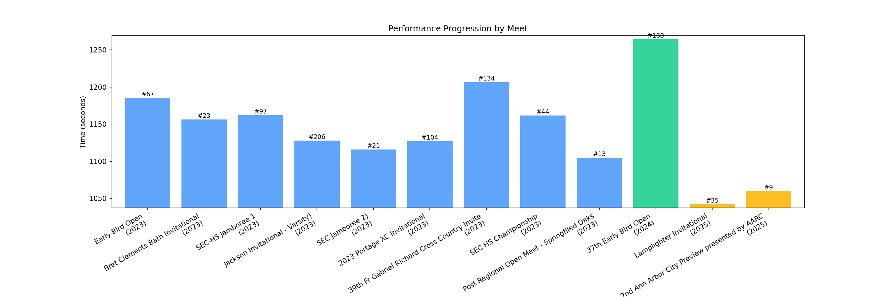

Athlete Information
Garrett Comer

Ann Arbor Skyline
Current Grade: 11
Link to athlete.net accountSeason Record (SR): 17:22.3
Personal Record (PR): 17:22.3
Ann Arbor Skyline
Current Grade: 11
Link to athlete.net accountSeason Record (SR): 17:22.3
Personal Record (PR): 17:22.3
| Race Name | Date | Location | Distance | Time | Place | Grade | Results |
|---|---|---|---|---|---|---|---|
| Lamplighter Invitational | Aug 15 2025 | N/A | 5K | 17:22.3 | 35 | 11 | View Results |
| 2nd Ann Arbor City Preview presented by AARC | Aug 27 2025 | N/A | 5K | 17:40.1 | 9 | 11 | View Results |
| 37th Early Bird Open (HS Open 5K) | Aug 29 2024 | N/A | 5K | 21:04.2 | 160 | 10 | View Results |
| 2024 Portage Invitational | Oct 5 2025 | N/A | 5K | 21:04.9 | 318 | 19 | View Results |
| Early Bird Open (Open Men's 5K) | Aug 31 2023 | N/A | 5K | 19:45.4 | 67 | 9 | View Results |
| Bret Clements Bath Invitational (J.V.) | Sep 9 2023 | N/A | 5K | 19:16.3 | 23 | 9 | View Results |
| SEC-HS Jamboree 1 (Red/White Varsity Boys) | Sep 13 2023 | N/A | 5K | 19:22.2 | 97 | 9 | View Results |
| Jackson Invitational - Varsity (Orange Division (1000 + enrolment)) | Sep 23 2023 | N/A | 5K | 18:47.9 | 206 | 9 | View Results |
| SEC Jamboree 2 (Red) (Reserve Wave 1 (<21:00)) | Sep 27 2023 | N/A | 5K | 18:36.0 | 21 | 9 | View Results |
| 2023 Portage XC Invitational (Division 1 Reserve) | Oct 7 2023 | N/A | 5K | 18:47.1 | 104 | 9 | View Results |
| 39th Fr Gabriel Richard Cross Country Invite (Varsity Large School) | Oct 14 2023 | N/A | 5K | 20:06.6 | 134 | 9 | View Results |
| SEC HS Championship (All Division Reserve) | Oct 19 2023 | N/A | 5K | 19:21.8 | 44 | 9 | View Results |
| Post Regional Open Meet (PROM) - Springfiled Oaks | Oct 28 2023 | N/A | 5K | 18:24.6 PR | 13 | 9 | View Results |
This graph visualizes the athlete's race times across meets, color-coded by grade.
